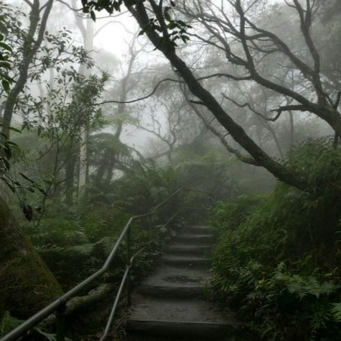
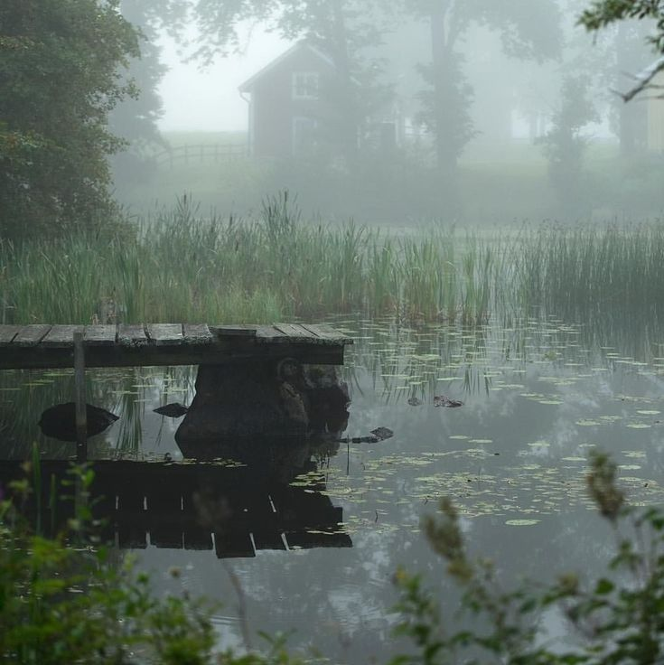
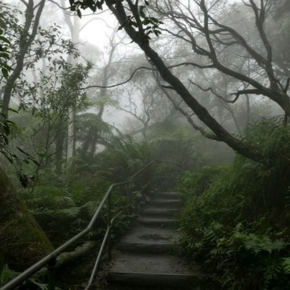
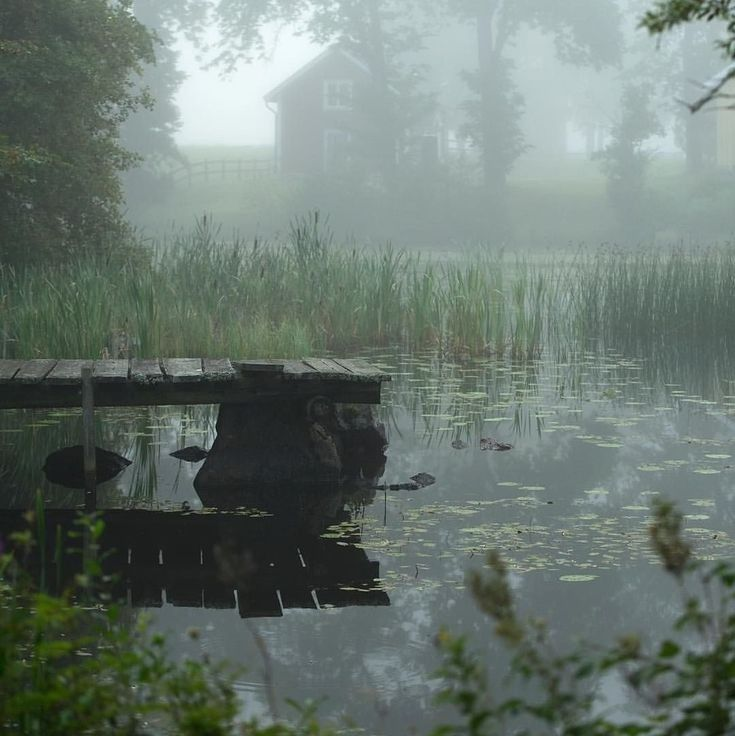

Fotógrafa profissional especializada em retratos e paisagens.
FERRAMENTAS DE EDIÇÃO : PHOTOSHOP / ADOBE LIGHTROOM
.jpg) 



Maria Souza nasceu em 1998, na cidade de Petrópolis, Rio de Janeiro. Desde jovem, Maria demonstrou um olhar atento para os detalhes e uma paixão pela arte. Aos 15 anos, ganhou sua primeira câmera fotográfica de seu avô, um antigo fotógrafo de casamentos. Esse presente despertou nela um amor profundo pela fotografia. Após concluir o ensino médio, Maria decidiu estudar Fotografia na renomada Escola de Belas Artes da Universidade Federal do Rio de Janeiro (UFRJ). Durante seus estudos, ela se destacou por sua habilidade em capturar a essência humana em suas fotos, especialmente em retratos e fotografias de rua. Em 2010, Maria realizou sua primeira exposição solo intitulada “Olhares do Cotidiano”, que foi um grande sucesso e lhe rendeu reconhecimento no cenário artístico brasileiro. Suas fotos, que retratavam a vida cotidiana das pessoas nas ruas do Rio de Janeiro, foram elogiadas por sua sensibilidade e profundidade. Ao longo dos anos, Maria Souza participou de diversas exposições internacionais, incluindo mostras em Paris, Nova York e Tóquio. Em 2015, ela foi convidada a integrar a equipe de fotógrafos da National Geographic, onde trabalhou em projetos documentais sobre a vida selvagem e culturas indígenas na Amazônia. Além de seu trabalho como fotógrafa, Maria é uma defensora apaixonada dos direitos humanos e ambientais. Em 2018, ela fundou a ONG “Olhar Sustentável”, que utiliza a fotografia como ferramenta para promover a conscientização sobre questões ambientais e sociais. Atualmente, Maria Souza continua a explorar o mundo com sua câmera, sempre em busca de novas histórias para contar através de suas lentes. Seu trabalho é uma celebração da diversidade e da beleza do mundo, e ela acredita que a fotografia tem o poder de transformar a maneira como vemos e entendemos a realidade.